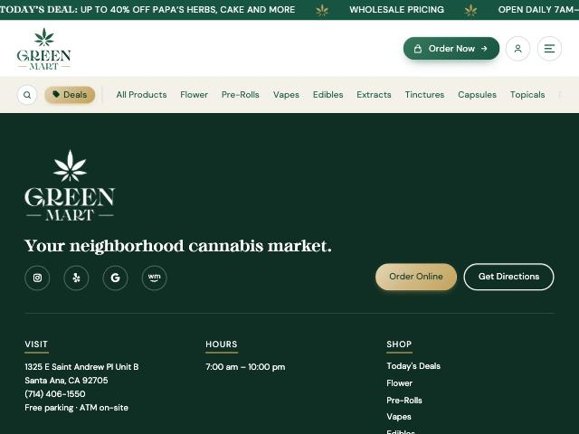
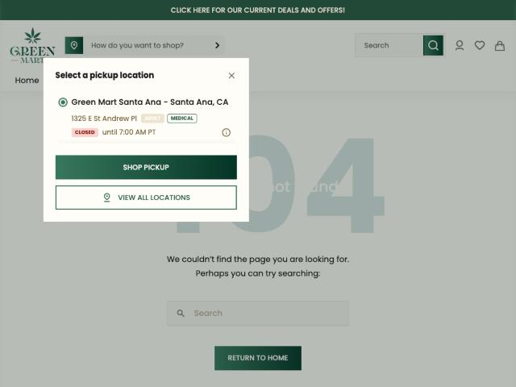
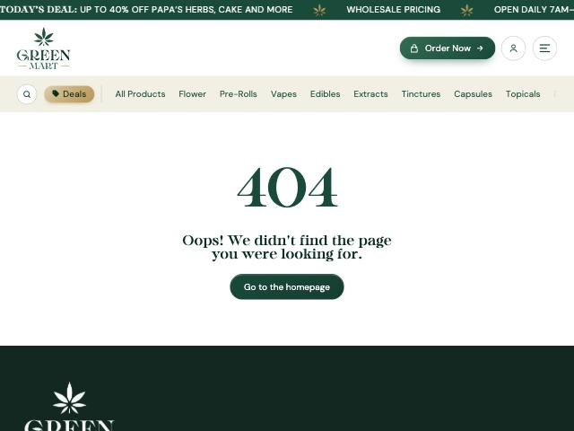
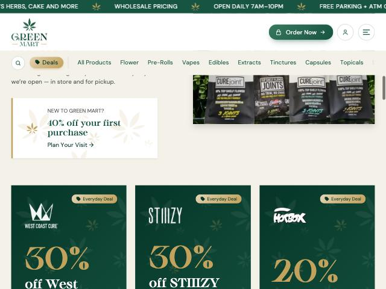
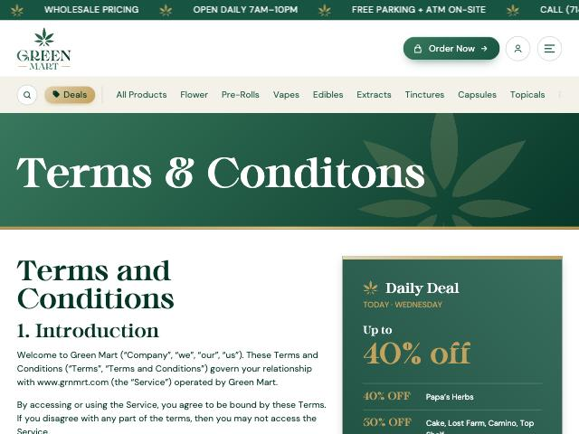
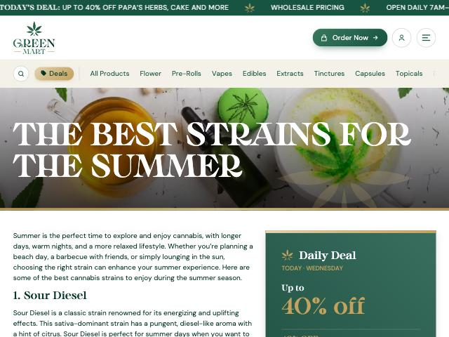
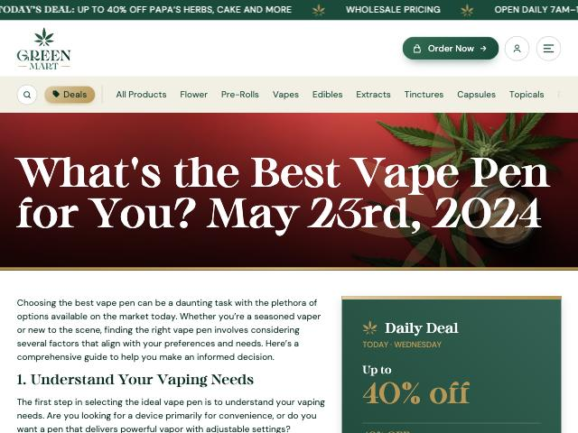
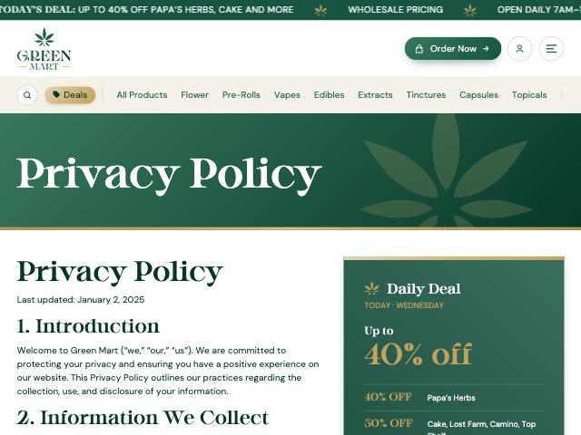
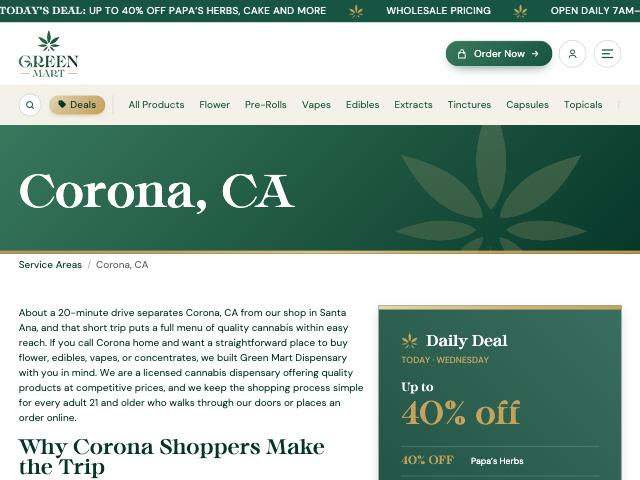
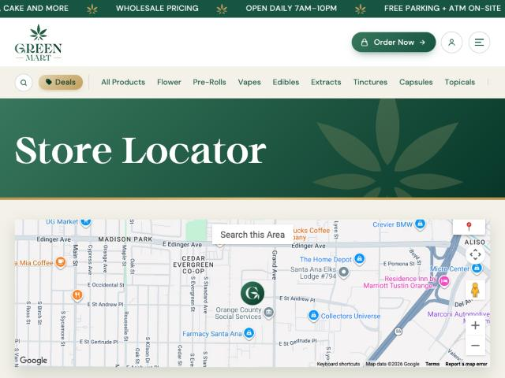

| Broken links |
| 1 | All 11 category links in the menu bar (Flower, Pre-Rolls, Vapes, Edibles, Extracts, Tinctures, Capsules, Topicals, Drinks, CBD, Accessories) go to /shop/collection/... addresses that return "Page not found" (status 404). The page is blank between header and footer. |  <a href="/shop/collection/flower" class="nav-link ...">Flower</a>
Open the page | Fixed once the Treez menu runs at /shop/ (see Menu setup). Test each link after. |
| 2 | The "Deals" button, 61 daily deal brand links, "Sign in" and "Wishlist" point to www.grnmrt.com/shop/... addresses that show a 404 page on the current site today. |  <a href="https://www.grnmrt.com/shop/deals" ...>Deals</a>
<a href="https://www.grnmrt.com/shop/brand/almora-farm" ...>Almora Farms</a>
<a href="https://www.grnmrt.com/shop/wishlist">Wishlist</a>
Open the page | Point each one at the real menu address once the menu location is set, then test them all. |
| 3 | "All Brands" and the everyday deal cards (West Coast Cure, STIIIZY, Hotbox) go to addresses that return "Page not found". | <a href="/shop/brands" class="btn btn-accent">All Brands</a>
<a href="/shop/brand/west-coast-cure" ...>Everyday Deal 30% off West Coast Cure</a>
Open the page | Same fix as #1. |
| 4 | The seven "Shop [day]'s Deals" buttons point to /deals, which returns "Page not found". |  <a href="/deals" class="btn btn-accent ...">Shop Monday’s Deals</a>
Open the page | Point them to /about/special-offers/ or that day's deals in the menu. |
| 5 | "Order Now" and "All Products" go to www.grnmrt.com/shop. That works today because it is the current site. After the switch, www.grnmrt.com is the new WordPress site. | <a class="btn gm-header-order" href="https://www.grnmrt.com/shop">Order Now</a>
| Retest after the switch, once the menu is live at /shop/. |
| 6 | The "40% off your first purchase" card says "Plan Your Visit" but opens /shop. |  <a href="/shop" ...>Plan Your Visit →</a>
| Match the label to where it goes. |
| Typos and test files |
| 7 | "Conditons" misspelled in the page address and in the banner heading. |  Open the page | Rename to /terms-and-conditions/ and fix the heading. |
| 8 | The home page slider images are files named test.webp to test4.webp, with alt text "Test" to "Test4". | <img src="/wp-content/uploads/test4.webp" alt="Test4">
<img src="/wp-content/uploads/test3.webp" alt="Test3">
| Rename the files and write alt text that says what each photo shows. |
| 9 | Blog titles in all caps, for example "THE BEST STRAINS FOR THE SUMMER" and "CANNABINOIDS AND THE BODY + ALL NEW PRODUCTS". |  Open the page | Title case. |
| 10 | A date inside a post title: "What's the Best Vape Pen for You? May 23rd, 2024". |  Open the page | Drop the date from the title, show an "Updated" date instead. |
| Headings and page titles |
| 11 | Two H1 headings on the home page. The first is hidden on screen with visually-hidden. | <h1 class="visually-hidden">Green Mart Dispensary in Santa Ana, CA</h1>
<h1 class="h3 fw-bold ...">Shopping for Cannabis Made Simple</h1>
| Keep one H1. Make "Shopping for Cannabis Made Simple" an H2. |
| 12 | Two H1 headings on Privacy ("Privacy Policy" twice) and Terms ("Terms & Conditons" plus "Terms and Conditions"). |  Open the page | One H1 per page. |
| 13 | A list of cities added to the end of every blog post's title tag. | <title>New to Edibles in Santa Ana? How to Start Low and Go Slow - Orange, CA, Santa Ana, CA & Costa Mesa, CA | Green Mart Dispensary</title>
Open the page | Remove the city lists. |
| 14 | No meta description on any of the 24 posts or the blog index. | <title>New to Edibles in Santa Ana? ...</title>
<!-- no <meta name="description"> tag on this page -->
| One or two sentences each. We can supply them. |
| Facts to confirm |
| 15 | The current grnmrt.com sells "weed delivery in Santa Ana, Irvine and Tustin". The new site describes in-store shopping and pickup only. | <!-- current www.grnmrt.com -->
<title>Cannabis Dispensary & Weed Delivery Santa Ana - Green Mart</title>
<meta name="description" content="... fast weed delivery in Santa Ana, Irvine & Tustin ...">
Open the new pickup page | Green Mart confirms one answer, used everywhere. |
| 16 | Drive times on city pages, for example "About a 20-minute drive separates Corona, CA from our shop in Santa Ana". |  Open the page | Check each one against real drive times. |
| 17 | Hours shown as open daily 7am to 10pm in the header, footer and schema. | "dayOfWeek": "Monday", "opens": "07:00", "closes": "22:00"
... same for every day
| Confirm it matches Google Business Profile, including holidays. |
| Code and schema |
| 18 | Business schema appears in two blocks. One has a trailing space in the phone and a relative logo path. The other has no phone. The url points to the staging Santa Ana page. | "telephone": "(714) 406-1550 ",
"image": "/wp-content/uploads/logo.png",
"url": "https://greenmart.site.newpreview.dev/service-areas/santa-ana-ca/"
...
"telephone":false
| Replace with one Store block (see Set up before launch). |
| 19 | Page schema gives the home page the headline "Home", and its text drops the business name. | "headline":"Home"
"articleBody": "... That is why we built around a straightforward idea ..."
| Fix the headline and the missing name. |
| 20 | Navigation schema lists 3 menu items with the address #. | {"@type": "SiteNavigationElement", "name": "Products", "url": "#"}
{"@type": "SiteNavigationElement", "name": "Brands", "url": "#"}
{"@type": "SiteNavigationElement", "name": "About", "url": "#"}
| Use the real hub URLs or leave those items out. |
| 21 | Photos with empty alt text: 10 on the home page, 10 on the blog index. | <img src="/wp-content/uploads/green-mart-yelp-026.webp" alt="">
<img src="/wp-content/uploads/green-mart-yelp-021.webp" alt="">
| Describe each photo. |
| 22 | The age verification popup is in the page code twice (one copy hidden), with the same element ID. | <button type="button" class="btn btn-primary btn-lg" id="ageGateYes">
<button type="button" class="btn btn-primary btn-lg" id="ageGateYes">
| Keep one copy. |
| 23 | The store locator page is a map with about 80 words of text. |  Open the page | Expand into a full Visit page: directions, parking, ATM, hours. |
| 24 | Brand logos and everyday deal cards are in the page code twice for the carousel, and all 7 daily deal panels load at once. | <img alt="STIIIZY logo"> × 2
<img alt="Jeeter logo"> × 2
<img alt="Heavy Hitters logo"> × 2
...
| Load today's panel first, lazy load below the first screen, compress the slider images. |
| 25 | The "Website by Range Marketing" footer link is a followed link on every page. | <a href="https://rangemarketing.com/" target="_blank" rel="noopener" title="Website Designed by Range Marketing">Website by Range Marketing</a>
| Add rel="nofollow" or move it to one credits page. |